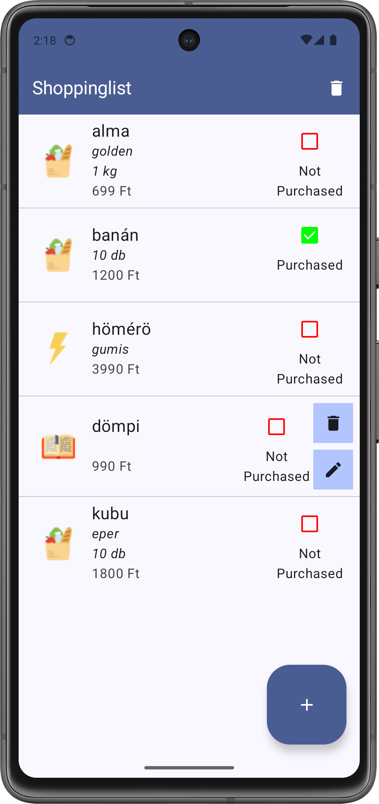
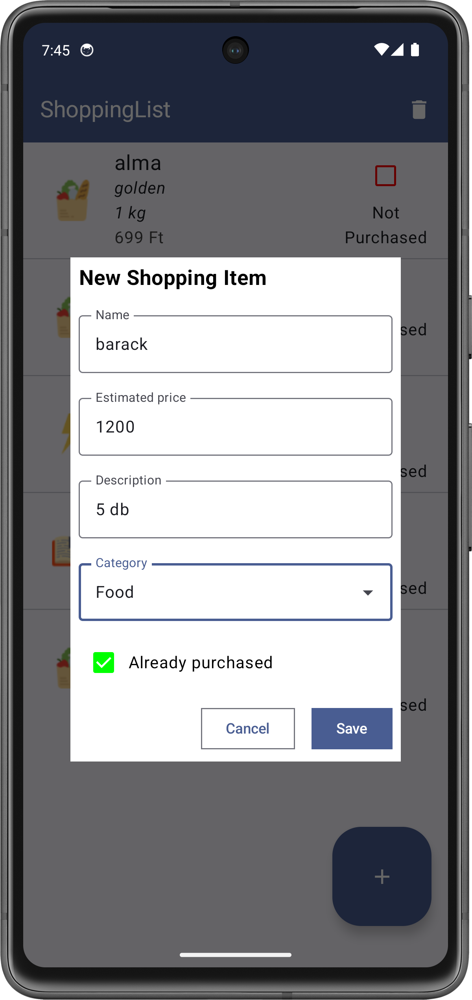

Labor 06 - Bevásárló alkalmazás készítése¶
Bevezető¶
A labor során egy bevásárló lista alkalmazás elkészítése a feladat. Az alkalmazásban fel lehet venni megvásárolni kívánt termékeket, valamint megvásároltnak lehet jelölni és törölni lehet meglévőket.
Az alkalmazás a termékek listáját RecyclerView-ban jeleníti meg, a lista elemeket és azok állapotát a Room nevű ORM library segítségével tárolja perzisztensen. Új elem felvételére egy FloatingActionButton megnyomásával van lehetőség.
ORM
Felhasznált technológiák:
Az alkalmazás specifikációja¶
Az alkalmazás egy Activity-ből áll, ami bevásárlólista elemeket jelenít meg. Új elemet a jobb alsó sarokban található FloatingActionButton segítségével vehetünk fel. Erre kattintva egy dialógus jelenik meg, amin megadhatjuk a vásárolni kívánt áru nevét, leírását, kategóriáját és becsült árát.
A dialóguson az OK gombra kattintva a dialógus eltűnik, a benne megadott adatokkal létrejön egy lista elem a listában. Az egyes lista elemeken CheckBox segítségével jelezhetjük, hogy már megvásároltuk őket. A kuka ikonra kattintva törölhetjük az adott elemet.
A menüben található „Remove all” opcióval az összes lista elemet törölhetjük.
 
Laborfeladatok¶
A labor során az alábbi feladatokat a laborvezető segítségével, illetve a jelölt feladatokat önállóan kell megvalósítani.
- Perzisztens adattárolás megvalósítása: 1 pont
- Lista megjelenítése
RecyclerView-val: 2 pont - Dialógus megvalósítása új elem hozzáadásához: 1 pont
- Önálló feladat (törlés megvalósítása): 1 pont
IMSc
A laborfeladatok sikeres befejezése után az IMSc feladatokat megoldva 2 IMSc pont szerezhető:
Megerősítő dialógus: 1 pont
Elemek szerkesztése: 1 pont
Előkészületek¶
A feladatok megoldása során ne felejtsd el követni a feladat beadás folyamatát.
Git repository létrehozása és letöltése¶
-
Moodle-ben keresd meg a laborhoz tartozó meghívó URL-jét és annak segítségével hozd létre a saját repository-dat.
-
Várd meg, míg elkészül a repository, majd checkout-old ki.
Egyetemi laborokban, ha a checkout során nem kér a rendszer felhasználónevet és jelszót, és nem sikerül a checkout, akkor valószínűleg a gépen korábban megjegyzett felhasználónévvel próbálkozott a rendszer. Először töröld ki a mentett belépési adatokat (lásd itt), és próbáld újra.
-
Hozz létre egy új ágat
megoldasnéven, és ezen az ágon dolgozz. -
A
neptun.txtfájlba írd bele a Neptun kódodat. A fájlban semmi más ne szerepeljen, csak egyetlen sorban a Neptun kód 6 karaktere.
Projekt létrehozása¶
Első lépésként indítsuk el az Android Studio-t, majd:
1. Hozzunk létre egy új projektet, válasszuk az Empty Views Activity lehetőséget.
2. A projekt neve legyen ShoppingList, a kezdő package pedig hu.bme.aut.android.shoppinglist
3. Nyelvnek válasszuk a Kotlin-t.
4. A minimum API szint legyen API24: Android 7.0.
FILE PATH
A projekt a repository-ban lévő ShoppingList könyvtárba kerüljön, és beadásnál legyen is felpusholva! A kód nélkül nem tudunk maximális pontot adni a laborra!
Amint elkészült a projektünk, kapcsoljuk is be a ViewBinding-ot. Az app modulhoz tartozó build.gradle.kts fájlban az android tagen belülre illesszük be az engedélyezést (Ezek után kattintsunk jobb felül a Sync Now gombra.):
android {
...
buildFeatures {
viewBinding = true
}
}
A kezdő Activity neve maradhat MainActivity, valamint töltsük le és tömörítsük ki az alkalmazáshoz szükséges erőforrásokat, majd másoljuk be őket a projekt app/src/main/res mappájába (Studio-ban a res mappán állva Ctrl+V)!
Perzisztens adattárolás megvalósítása (1 pont)¶
Az adatok perzisztens tárolásához a Room könyvtárat fogjuk használni.
Room hozzáadása a projekthez¶
Kezdjük azzal, hogy az app modulhoz tartozó build.gradle.kts fájlban a pluginokhoz hozzáírunk egy sort (bekapcsoljuk a Kotlin Annotation Processort - KAPT):
plugins {
id("com.android.application")
id("org.jetbrains.kotlin.android")
kotlin("kapt")
}
//...
Ezt követően, szintén ebben a build.gradle.kts fájlban a dependencies blokkhoz adjuk hozzá a Room libraryt:
dependencies {
//...
val room_version = "2.4.0"
implementation("androidx.room:room-runtime:$room_version")
implementation("androidx.room:room-ktx:$room_version")
kapt("androidx.room:room-compiler:$room_version")
}
Room
A Room egy kényelmes adatbazáskezelést lehetővé tevő API-t nyújt a platform szintű SQLite implementáció fölé. Megspórolható vele a korábban látott sok újra és újra megírandó kód, például a táblák adatait és létrehozó scriptjét tartalmazó Table osztályok, a DBHelper és a PersistentDataHelper. Ezeket és más segédosztályokat a Room annotation alapú kódgenerálással hozza létre a build folyamat részeként.
A Room alapvető komponenseinek, architektúrájának és használatának leírása megtalálható a megfelelő developer.android.com oldalon.
Egy modell osztály létrehozása¶
A hu.bme.aut.android.shoppinglist package-ben hozzunk létre egy új package-et data néven. A data package-ben hozzunk létre egy új Kotlin osztályt, aminek a neve legyen ShoppingItem:
@Entity(tableName = "shoppingitem")
data class ShoppingItem(
@ColumnInfo(name = "id") @PrimaryKey(autoGenerate = true) var id: Long? = null,
@ColumnInfo(name = "name") var name: String,
@ColumnInfo(name = "description") var description: String,
@ColumnInfo(name = "category") var category: Category,
@ColumnInfo(name = "estimated_price") var estimatedPrice: Int,
@ColumnInfo(name = "is_bought") var isBought: Boolean
) {
enum class Category {
FOOD, ELECTRONIC, BOOK;
companion object {
@JvmStatic
@TypeConverter
fun getByOrdinal(ordinal: Int): Category? {
var ret: Category? = null
for (cat in values()) {
if (cat.ordinal == ordinal) {
ret = cat
break
}
}
return ret
}
@JvmStatic
@TypeConverter
fun toInt(category: Category): Int {
return category.ordinal
}
}
}
}
@Entity jelzi a Room kódgenerátorának, hogy ennek az osztálynak a példányai adatbázis rekordoknak fognak megfelelni egy táblában és hogy az egyes változói felelnek majd meg a tábla oszlopainak. A @ColumnInfo annotációval megadjuk, hogy mi legyen a tagváltozónak megfelelő oszlop neve. @PrimaryKey-jel jelöljük a tábla egyszerű kulcs attribútumát.
Az osztályban létrehoztunk egy enum-ot is, amivel egy kategóriát akarunk kódolni. Az enum-nak van két statikus metódusa, @TypeConverter annotációval ellátva. Ezekkel oldható meg, hogy az adatbázis akár összetett adatszerkezeteket is tárolni tudjon. Ezek a függvények felelősek azért, hogy egy felhasználói típust lefordítsanak egy, az adatbázis által támogatott típusra, illetve fordítva.
Megfigyelhető továbbá, hogy ezen függvények el vannak látva a @JvmStatic annotációval is. Erre azért van szükség, mert alapvetően, amikor a companion object-ek Jvm bájtkódra fordulnak, akkor egy külön statikus osztály jön számukra létre. Ezzel az annotációval lehet megadni, hogy ne jöjjön létre külön statikus osztály, ehelyett a bennfoglaló osztály (jelen esetben Category) statikus függvényei legyenek. Erre a speciális viselkedésre pedig a Room működése miatt van szükség, ugyanis tudnia kell, hol keresse egy-egy típusra a konvertereket.
data class
Kotlinban van lehetőség úgynevezett data class létrehozására. Ezt talán legkönnyebben a Java-s POJO (Plain-Old-Java-Object) osztályoknak lehet megfeleltetni. A céljuk, hogy publikus property-kben összefüggő adatokat tároljanak, semmi több! Ezen kívül automatikusan létrejönnek bizonyos segédfüggvények is, például egy megfelelő equals, toString és copy implementáció.
Egy DAO osztály létrehozása¶
DAO
DAO = Data Access Object
A data package-ben hozzunk létre egy új Kotlin interfészt, aminek a neve legyen ShoppingItemDao:
@Dao
interface ShoppingItemDao {
@Query("SELECT * FROM shoppingitem")
fun getAll(): List<ShoppingItem>
@Insert
fun insert(shoppingItems: ShoppingItem): Long
@Update
fun update(shoppingItem: ShoppingItem)
@Delete
fun deleteItem(shoppingItem: ShoppingItem)
}
Egy @Dao annotációval ellátott interfész a Room kódgenerátora számára azt jelzi, hogy generálni kell az interfészhez egy olyan implementációt, ami az interfész függvényeket az azokon lévő annotációk (@Query, @Insert, @Update, @Delete) alapján valósítja meg.
Figyeljük meg, hogy az Android Studio a @Query annotáció paramétereként átadott SQLite scriptre is nyújt kódkiegészítést, hiba jelzést!
Az adatbázis osztály létrehozása¶
A data package-ben hozzunk létre egy új Kotlin osztályt, aminek a neve legyen ShoppingListDatabase:
@Database(entities = [ShoppingItem::class], version = 1)
@TypeConverters(value = [ShoppingItem.Category::class])
abstract class ShoppingListDatabase : RoomDatabase() {
abstract fun shoppingItemDao(): ShoppingItemDao
companion object {
fun getDatabase(applicationContext: Context): ShoppingListDatabase {
return Room.databaseBuilder(
applicationContext,
ShoppingListDatabase::class.java,
"shopping-list"
).build();
}
}
}
A @Database annotációval lehet jelezni a kódgenerátornak, hogy egy osztály egy adatbázist fog reprezentálni. Az ilyen osztálynak absztraktnak kell lennie, valamint a RoomDatabase-ből kell származnia. Az annotáció entities paraméterének egy listát kell átadni, ami az adatbázis tábláknak megfelelő @Entity-vel jelzett osztályokat tartalmazza. A version paraméter értéke a lokális adatbázis verzió. A @TypeConverters annotációval lehet megadni a Room-nak olyan osztályokat, amik @TypeConverter-rel ellátott függvényeket tartalmaznak, ezzel támogatva a típuskonverziót adatbázis és objektum modell között. A ShoppingListDatabase osztály felelős a megfelelő DAO osztályok elérhetőségéért is.
Ezen kívül van még egy statikus getDatabase függvény, ami azt írja le, hogyan kell létrehozni az adatbázist (melyik osztályból, milyen néven). Ez a függvény az alkalmazás kontextusát várja paraméterül.
BEADANDÓ (1 pont)
Készíts egy képernyőképet, amelyen látszik a database osztály kódja, valamint a neptun kódod a kódban valahol kommentként. A képet a megoldásban a repository-ba f1.png néven töltsd föl.
A képernyőkép szükséges feltétele a pontszám megszerzésének.
Lista megjelenítése RecyclerView-val (2 pont)¶
A lista adapter létrehozása¶
Következő lépésként a lista adaptert fogjuk létrehozni, ami a modell elemeket fogja majd szolgáltatni a RecyclerView-nak.
A hu.bme.aut.android.shoppinglist package-ben hozzunk létre egy új package-et adapter néven!
Az adapter package-ben hozzunk létre egy új Kotlin osztályt ShoppingAdapter néven:
class ShoppingAdapter(private val listener: ShoppingItemClickListener) :
RecyclerView.Adapter<ShoppingAdapter.ShoppingViewHolder>() {
private val items = mutableListOf<ShoppingItem>()
override fun onCreateViewHolder(parent: ViewGroup, viewType: Int) = ShoppingViewHolder(
ItemShoppingListBinding.inflate(LayoutInflater.from(parent.context), parent, false)
)
override fun onBindViewHolder(holder: ShoppingViewHolder, position: Int) {
// TODO implementation
}
override fun getItemCount(): Int = items.size
interface ShoppingItemClickListener {
fun onItemChanged(item: ShoppingItem)
}
inner class ShoppingViewHolder(val binding: ItemShoppingListBinding) : RecyclerView.ViewHolder(binding.root)
}
A listát RecyclerView segítségével szeretnénk megjeleníteni, ezért az adapter a RecyclerView.Adapter osztályból származik. Az adapter a modell elemeket egy listában tárolja. A rendszer a RecyclerView-val való hatékony lista megjelenítéshez a ViewHolder tervezési mintát valósítja meg, ezért szükség van egy ViewHolder osztály megadására is. ViewHolder-eken keresztül érhetjük majd el a lista elemekhez tartozó View-kat. Mivel a ViewHolder osztály példányai az Adapterhez lesznek csatolva (azért, hogy elérjék a belső változóit), inner class osztályként kell definiálni.
A RecyclerView.Adapter három absztrakt függvényt definiál, amelyeket kötelező megvalósítani. Az onCreateViewHolder()-ben hozzuk létre az adott lista elemet megjelenítő View-t és a hozzá tartozó ViewHolder-t. Az onBindViewHolder()-ben kötjük hozzá a modell elemhez a nézetet, a getItemCount() pedig a listában található (általános esetre fogalmazva a megjelenítendő) elemek számát kell, hogy visszaadja.
A ShoppingAdapter-ben definiáltunk egy ShoppingItemClickListener nevű interfészt is, aminek a segítségével jelezhetjük az alkalmazás többi része felé, hogy esemény történt egy lista elemen.
Az ItemShoppingListBinding-ra hibát jelez a fordító, hiszen még nem hoztuk létre a hozzá tartozó layout erőforrást. Ezt tegyük is meg: Hozzuk létre item_shopping_list.xml néven és cseréljük le a fájl tartalmát az alábbira:
<?xml version="1.0" encoding="utf-8"?>
<LinearLayout xmlns:android="http://schemas.android.com/apk/res/android"
xmlns:tools="http://schemas.android.com/tools"
android:layout_width="match_parent"
android:layout_height="wrap_content"
android:orientation="horizontal"
android:paddingBottom="8dp"
android:paddingLeft="16dp"
android:paddingRight="16dp"
android:paddingTop="8dp">
<CheckBox
android:id="@+id/cbIsBought"
android:layout_width="wrap_content"
android:layout_height="wrap_content"
android:layout_gravity="center_vertical"
android:text="@string/bought" />
<ImageView
android:id="@+id/ivIcon"
android:layout_width="64dp"
android:layout_height="64dp"
android:layout_marginLeft="8dp"
tools:src="@drawable/open_book" />
<LinearLayout
android:layout_width="0dp"
android:layout_height="wrap_content"
android:layout_marginLeft="8dp"
android:layout_weight="1"
android:orientation="vertical">
<TextView
android:id="@+id/tvName"
android:layout_width="wrap_content"
android:layout_height="wrap_content"
tools:text="Apple" />
<TextView
android:id="@+id/tvDescription"
android:layout_width="wrap_content"
android:layout_height="wrap_content"
tools:text="My favorite fruit" />
<TextView
android:id="@+id/tvCategory"
android:layout_width="wrap_content"
android:layout_height="wrap_content"
tools:text="Food" />
<TextView
android:id="@+id/tvPrice"
android:layout_width="wrap_content"
android:layout_height="wrap_content"
tools:text="20 Ft" />
</LinearLayout>
<ImageButton
android:id="@+id/ibRemove"
style="@style/Widget.AppCompat.Button.Borderless"
android:layout_width="50dp"
android:layout_height="50dp"
android:layout_gravity="center_vertical"
android:scaleType="fitXY"
android:src="@drawable/ic_delete_grey600_48dp" />
</LinearLayout>
@string/bought erőforrást! Kattintsunk rá az erőforrás hivatkozásra, majd Alt + Enter lenyomása után válasszuk a „Create string value resource ’bought’” lehetőséget! A felugró ablakban az erőforrás értékének adjuk a Bought értéket!
Térjünk vissza az ShoppingAdapter-hez, és írjuk meg onBindViewHolder-ben az adatok megjelenítésének logikáját. Érdemes megfigyelni a getImageResource függvényt, ami az enum-hoz társítja a megfelelő képi erőforrást.
override fun onBindViewHolder(holder: ShoppingViewHolder, position: Int) {
val shoppingItem = items[position]
holder.binding.ivIcon.setImageResource(getImageResource(shoppingItem.category))
holder.binding.cbIsBought.isChecked = shoppingItem.isBought
holder.binding.tvName.text = shoppingItem.name
holder.binding.tvDescription.text = shoppingItem.description
holder.binding.tvCategory.text = shoppingItem.category.name
holder.binding.tvPrice.text = "${shoppingItem.estimatedPrice} Ft"
holder.binding.cbIsBought.setOnCheckedChangeListener { buttonView, isChecked ->
shoppingItem.isBought = isChecked
listener.onItemChanged(shoppingItem)
}
}
@DrawableRes()
private fun getImageResource(category: ShoppingItem.Category): Int {
return when (category) {
ShoppingItem.Category.FOOD -> R.drawable.groceries
ShoppingItem.Category.ELECTRONIC -> R.drawable.lightning
ShoppingItem.Category.BOOK -> R.drawable.open_book
}
}
Biztosítsuk egy elem hozzáadásának, valamint a teljes lista frissítésének lehetőségét az alábbi függvényekkel:
fun addItem(item: ShoppingItem) {
items.add(item)
notifyItemInserted(items.size - 1)
}
fun update(shoppingItems: List<ShoppingItem>) {
items.clear()
items.addAll(shoppingItems)
notifyDataSetChanged()
}
RecyclerView notify
A RecyclerView megírásánál figyeltek arra, hogy hatékony legyen, ezért az adathalmaz változásakor csak azokat a nézeteket frissíti, amit feltétlen szükséges. Azonban szintén hatékonyság miatt, nem az adapter fogja kiszámolni a változást, hanem ezt a programozónak kell kézzel jeleznie. Erre szolgál a notify*** függvénycsalád, aminek két tagja fent látható. Az alsó hatására a teljes adathalmaz lecserélődik, és újrarajzolódik minden. Az első hatására viszont a már létező elemek nem módosulnak, csak egy újonnan beszúrt elem lesz kirajzolva.
A RecyclerView és az adatok megjelenítése¶
Kezdjük azzal, hogy kiegészítjük a themes.xml fájl tartalmát az alábbira:
<resources xmlns:tools="http://schemas.android.com/tools">
<!-- Base application theme. -->
<style name="Base.Theme.ShoppingList" parent="Theme.Material3.DayNight.NoActionBar">
<!-- Customize your light theme here. -->
<!-- <item name="colorPrimary">@color/my_light_primary</item> -->
</style>
<style name="Theme.ShoppingList" parent="Theme.MaterialComponents.DayNight.DarkActionBar">
<item name="windowActionBar">false</item>
<item name="windowNoTitle">true</item>
</style>
</resources>
Szeretnék, hogy a bevásárlólista alkalmazás egyetlen Activity-jét teljesen elfoglalja. Ennek az eléréséhez cseréljük le az activity_main.xml tartalmát az alábbiakra:
<?xml version="1.0" encoding="utf-8"?>
<androidx.coordinatorlayout.widget.CoordinatorLayout
xmlns:android="http://schemas.android.com/apk/res/android"
xmlns:app="http://schemas.android.com/apk/res-auto"
xmlns:tools="http://schemas.android.com/tools"
android:layout_width="match_parent"
android:layout_height="match_parent"
tools:context=".MainActivity">
<com.google.android.material.appbar.AppBarLayout
android:layout_width="match_parent"
android:layout_height="wrap_content">
<androidx.appcompat.widget.Toolbar
android:id="@+id/toolbar"
android:layout_width="match_parent"
android:layout_height="?attr/actionBarSize"
android:background="?attr/colorSecondary" />
</com.google.android.material.appbar.AppBarLayout>
<androidx.recyclerview.widget.RecyclerView
android:id="@+id/rvMain"
android:layout_width="match_parent"
android:layout_height="match_parent"
android:layout_marginTop="?attr/actionBarSize"
tools:listitem="@layout/item_shopping_list" />
<com.google.android.material.floatingactionbutton.FloatingActionButton
android:id="@+id/fab"
android:layout_width="wrap_content"
android:layout_height="wrap_content"
android:layout_gravity="bottom|end"
android:layout_margin="24dp"
app:srcCompat="@drawable/ic_add_white_36dp" />
</androidx.coordinatorlayout.widget.CoordinatorLayout>
A tools:listitem paraméter segítségével az Android Studio layout megjelenítő felületén megjelenik a paraméterben átadott listaelem.
Adjuk hozzá az alábbi változókat a MainActivity-hez és cseréljük le a projekt létrehozásakor generált onCreate() függvényt:
private lateinit var binding: ActivityMainBinding
private lateinit var database: ShoppingListDatabase
private lateinit var adapter: ShoppingAdapter
override fun onCreate(savedInstanceState: Bundle?) {
super.onCreate(savedInstanceState)
binding = ActivityMainBinding.inflate(layoutInflater)
setContentView(binding.root)
setSupportActionBar(binding.toolbar)
database = ShoppingListDatabase.getDatabase(applicationContext)
binding.fab.setOnClickListener {
//TODO
}
}
A MainActivity-hez adjuk hozzá a RecyclerView-t inicializáló kódrészletet:
private fun initRecyclerView() {
adapter = ShoppingAdapter(this)
binding.rvMain.layoutManager = LinearLayoutManager(this)
binding.rvMain.adapter = adapter
loadItemsInBackground()
}
private fun loadItemsInBackground() {
thread {
val items = database.shoppingItemDao().getAll()
runOnUiThread {
adapter.update(items)
}
}
}
thread() segédfüggvénnyel létrehozunk egy új szálat, a kiolvasott listát pedig az Activity által biztosított runOnUiThread függvény segítségével a főszálon adjuk át az adapternek.
Ez nem tökéletes megoldás, mivel ha elhagynánk az activity-t a kiolvasás során, a thread életben maradna, ami akár memóriaszivárgást is okozhat.
Egy jobb megoldást biztosít a Kotlin Coroutine támogatása, ennek bemutatására azonban sajnos a labor keretei között nincsen idő.
A ShoppingAdapter létrehozásakor a MainActivity-t adjuk át az adapter konstruktor paramétereként, de a MainActivity még nem implementálja a szükséges interfészt. Pótoljuk a hiányosságot:
class MainActivity : AppCompatActivity(), ShoppingAdapter.ShoppingItemClickListener {
//...
override fun onItemChanged(item: ShoppingItem) {
thread {
database.shoppingItemDao().update(item)
Log.d("MainActivity", "ShoppingItem update was successful")
}
}
}
Hívjuk meg az initRecyclerView() függvényt az onCreate() függvény utolsó lépéseként:
override fun onCreate(savedInstanceState: Bundle?) {
super.onCreate(savedInstanceState)
binding = ActivityMainBinding.inflate(layoutInflater)
setContentView(binding.root)
setSupportActionBar(binding.toolbar)
database = ShoppingListDatabase.getDatabase(applicationContext)
binding.fab.setOnClickListener {
//TODO
}
initRecyclerView()
}
BEADANDÓ (2 pont)
Készíts egy képernyőképet, amelyen látszik a lista (emulátoron, készüléket tükrözve vagy képernyőfelvétellel), egy ahhoz tartozó kódrészlet, valamint a neptun kódod a kódban valahol kommentként. A képet a megoldásban a repository-ba f2.png néven töltsd föl.
A képernyőkép szükséges feltétele a pontszám megszerzésének.
Dialógus megvalósítása új elem hozzáadásához (1 pont)¶
A dialógus megjelenítéséhez DialogFragment-et fogunk használni.
Hozzuk létre a dialógushoz tartozó layoutot dialog_new_shopping_item.xml, majd másoljuk be a dialógushoz tartozó layoutot:
<?xml version="1.0" encoding="utf-8"?>
<LinearLayout
xmlns:android="http://schemas.android.com/apk/res/android"
android:layout_width="match_parent"
android:layout_height="match_parent"
android:orientation="vertical"
android:padding="24dip">
<TextView
android:layout_width="wrap_content"
android:layout_height="wrap_content"
android:text="@string/name"/>
<EditText
android:id="@+id/etName"
android:layout_width="match_parent"
android:layout_height="wrap_content"/>
<TextView
android:layout_width="wrap_content"
android:layout_height="wrap_content"
android:layout_marginTop="16dip"
android:text="@string/description"/>
<EditText
android:id="@+id/etDescription"
android:layout_width="match_parent"
android:layout_height="wrap_content"/>
<TextView
android:layout_width="wrap_content"
android:layout_height="wrap_content"
android:layout_marginTop="16dip"
android:text="@string/category"/>
<Spinner
android:id="@+id/spCategory"
android:layout_width="match_parent"
android:layout_height="wrap_content" />
<TextView
android:layout_width="wrap_content"
android:layout_height="wrap_content"
android:layout_marginTop="16dip"
android:text="@string/estimated_price"/>
<EditText
android:id="@+id/etEstimatedPrice"
android:layout_width="match_parent"
android:layout_height="wrap_content"
android:inputType="numberDecimal"/>
<CheckBox
android:id="@+id/cbAlreadyPurchased"
android:layout_width="match_parent"
android:layout_height="wrap_content"
android:text="@string/already_purchased"/>
</LinearLayout>
strings.xml-ben:
<resources>
...
<string name="name">Name</string>
<string name="description">Description</string>
<string name="category">Category</string>
<string name="estimated_price">Estimated Price</string>
<string name="already_purchased">Already purchased</string>
<string name="new_shopping_item">New Shopping Item</string>
<string name="button_ok">OK</string>
<string name="button_cancel">Cancel</string>
<string-array name="category_items">
<item>Food</item>
<item>Electronic</item>
<item>Book</item>
</string-array>
...
</resources>
string-array-t is, ezeket a szövegeket a Spinnerben fogjuk megjeleníteni.
A hu.bme.aut.android.shoppinglist package-ben hozzunk létre egy új package-et fragments néven. A fragments package-ben hozzunk létre egy új Kotlin osztályt, aminek a neve legyen NewShoppingItemDialogFragment:
class NewShoppingItemDialogFragment : DialogFragment() {
interface NewShoppingItemDialogListener {
fun onShoppingItemCreated(newItem: ShoppingItem)
}
private lateinit var listener: NewShoppingItemDialogListener
private lateinit var binding: DialogNewShoppingItemBinding
override fun onAttach(context: Context) {
super.onAttach(context)
listener = context as? NewShoppingItemDialogListener
?: throw RuntimeException("Activity must implement the NewShoppingItemDialogListener interface!")
}
override fun onCreateDialog(savedInstanceState: Bundle?): Dialog {
binding = DialogNewShoppingItemBinding.inflate(LayoutInflater.from(context))
binding.spCategory.adapter = ArrayAdapter(
requireContext(),
android.R.layout.simple_spinner_dropdown_item,
resources.getStringArray(R.array.category_items)
)
return AlertDialog.Builder(requireContext())
.setTitle(R.string.new_shopping_item)
.setView(binding.root)
.setPositiveButton(R.string.button_ok) { dialogInterface, i ->
// TODO implement item creation
}
.setNegativeButton(R.string.button_cancel, null)
.create()
}
companion object {
const val TAG = "NewShoppingItemDialogFragment"
}
}
A DialogFragment-et az androidx.fragment.app csomagból, az AlertDialog-ot pedig az androidx.appcompat.app csomagból importáljuk! Ha az auto-import beimportálja az android.R package-t, azt töröljük ki.
Az osztályban definiáltunk egy NewShoppingItemDialogListener nevű callback interface-t, amelyen keresztül a dialógust megjelenítő Activity értesülhet az új elem létrehozásáról.
A megjelenő dialógust az onCreateDialog() függvényben állítjuk össze. Ehhez az AlertDialog.Builder osztályt használjuk fel. Az új elemet az OK gomb ClickListener-jében fogjuk létrehozni, amennyiben a bevitt adatok érvényesek. Jelen esetben az érvényesség a név mező kitöltöttségét jelenti.
Implementáljuk a dialógus pozitív gombjának eseménykezelőjét a NewShoppingItemDialogFragment osztály onCreateDialog függvényén belül:
.setPositiveButton(R.string.button_ok) { dialogInterface, i ->
if (isValid()) {
listener.onShoppingItemCreated(getShoppingItem())
}
}
Implementáljuk a hiányzó függvényeket:
private fun isValid() = binding.etName.text.isNotEmpty()
private fun getShoppingItem() = ShoppingItem(
name = binding.etName.text.toString(),
description = binding.etDescription.text.toString(),
estimatedPrice = binding.etEstimatedPrice.text.toString().toIntOrNull() ?: 0,
category = ShoppingItem.Category.getByOrdinal(binding.spCategory.selectedItemPosition)
?: ShoppingItem.Category.BOOK,
isBought = binding.cbAlreadyPurchased.isChecked
)
A fenti kódrészletben két dolgot érdemes megfigyelni. Egyrészt, a konstruktor paramétereit (és Kotlinban általánosan bármely függvény paramétereit) név szerint is át lehet adni, így nem szükséges megjegyezni a paraméterek sorrendjét, ha esetleg sok paraméterünk lenne. Amennyiben a függvényparamétereknek még alapértelmezett értéket is adunk, úgy még kényelbesebbé válhat ez a funkció, hiszen csak az "érdekes" paraméterek kapnak értéket. Ez a módszer esetleg a Python nyelvből lehet ismerős.
Elvis operátor
Egy másik érdekesség a ?:, avagy az Elvis operátor. Ez azt csinálja, hogy amennyiben a bal oldali kifejezés nem null-ra értékelődik ki, akkor értékül a bal oldali kifejezést adja, ha pedig null-ra értékelődik ki, akkor a jobb oldali kifejezést. Így egyszerű null értéktől függő értékadást tömören le lehet írni.
A MainActivity onCreate() függvényében frissítsük a FloatingActionButton OnClickListener-jét, hogy az a fentebb megvalósított dialógust dobja fel:
binding.fab.setOnClickListener{
NewShoppingItemDialogFragment().show(
supportFragmentManager,
NewShoppingItemDialogFragment.TAG
)
}
MainActivity-t, hogy implementálja a dialógusban definiált interface-t:
class MainActivity : AppCompatActivity(), ShoppingAdapter.ShoppingItemClickListener,
NewShoppingItemDialogFragment.NewShoppingItemDialogListener {
//...
override fun onShoppingItemCreated(newItem: ShoppingItem) {
thread {
val insertId = database.shoppingItemDao().insert(newItem)
newItem.id = insertId
runOnUiThread {
adapter.addItem(newItem)
}
}
}
Figyeljük meg, hogy ebben az esetben is thread-be csomagolva futtatunk adatbázis műveletet. A Room tiltja a UI szálon történő adatbázis műveletek futtatását. Emellett a user experience (UX) is romlik, ha az esetlegesen lassú műveletek megakasztják a UI szálat.
Az adatbázisba való beillesztés után szükséges az eredeti objektumunk id-jét az adatbázistól kapott id-re beállítani, különben egyéb műveletek nem végezhetők rajta.
Próbáljuk ki az alkalmazást!
BEADANDÓ (1 pont)
Készíts egy képernyőképet, amelyen látszik a dialógus ablak (emulátoron, készüléket tükrözve vagy képernyőfelvétellel), egy ahhoz tartozó kódrészlet, valamint a neptun kódod a kódban valahol kommentként. A képet a megoldásban a repository-ba f3.png néven töltsd föl.
A képernyőkép szükséges feltétele a pontszám megszerzésének.
Önálló feladat: törlés megvalósítása (1 pont)¶
Elem törlése egyesével, az elemeken található szemetes ikonra kattintás hatására.
Megoldás
- Gomb eseménykezelőjének megvalósítása
- Interfész kibővítése
- Interfész függvény megvalósítása
- Törlés az adatbázisból
- Törlés az adapterből
RecyclerViewfrissítése
BEADANDÓ (1 pont)
Készíts egy képernyőképet, amelyen látszik az üres lista (emulátoron, készüléket tükrözve vagy képernyőfelvétellel), egy a törléshez tartozó kódrészlet, valamint a neptun kódod a kódban valahol kommentként. A képet a megoldásban a repository-ba f4.png néven töltsd föl.
A képernyőkép szükséges feltétele a pontszám megszerzésének.
IMSc feladatok¶
Megerősítő dialógus (1 pont)¶
Implementáljunk egy Remove all feliratú menüpontot és a hozzá tartozó funkciót!
Az alkalmazás jelenítsen meg egy megerősítő dialógust, amikor a felhasználó a Remove all menüpontra kattint. A dialógus tartalmazzon egy rövid szöveges figyelmeztetést, hogy minden elem törlődni fog, egy pozitív és negatív gombot (OK és Cancel). A pozitív gomb lenyomásakor törlődjenek csak az elemek.
BEADANDÓ (1 iMSc pont)
Készíts egy képernyőképet, amelyen látszik az megerősítő dialógus (emulátoron, készüléket tükrözve vagy képernyőfelvétellel), egy ahhoz tartozó kódrészlet, valamint a neptun kódod a kódban valahol kommentként. A képet a megoldásban a repository-ba f6.png néven töltsd föl.
Elemek szerkesztése (1 pont)¶
Teremtsük meg a lista elemek szerkesztésének lehetőségét. A lista elemre helyezzünk egy szerkesztés gombot, melynek hatására nyíljon meg a már korábban implementált felviteli dialógus, a beviteli mezők pedig legyenek előre kitöltve a mentett értékekkel. Az OK gomb hatására a meglévő lista elem módosuljon az adatbázisban és a nézeten is.
BEADANDÓ (1 iMSc pont)
Készíts egy képernyőképet, amelyen látszik a szerkesztési dialógus (emulátoron, készüléket tükrözve vagy képernyőfelvétellel), egy ahhoz tartozó kódrészlet, valamint a neptun kódod a kódban valahol kommentként. A képet a megoldásban a repository-ba f7.png néven töltsd föl.